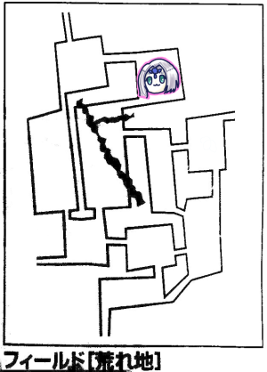

第8回らしいですよーどんどんぱふぱふ！
村の発展処理をしたところ、どうやらライダーギルドが設立されたようですよ！
ギルドマスターはエルフのミラベル・マッシムズ163才。
忘れないように一応メモっておきましょう。前みたいに誰だっけ？ってことになりそうだし。
このように、忘れていることに注意、との注意がGMから入りました。
セッションも長くなってきましたしね。TODOリストとか作りたいですね。
普通のミッションはやることが最初から開示されているけど、都の探索ミッションについてはノーヒントだそうです。今までの情報から推測するしかないので、情報管理は大切、というわけですね。
ちなみに他のミッション中に都の探索ミッションをしてもOKらしいです。
ミッションをこなして村に戻った時に都の探索ミッションを受け、その場でミッションコンプリート、ということになるようです。
オボロンミッションの時にウルトゥケの楽譜を見つけたのもそういうことですね。あれは別のミッションだった。楽譜のありかのヒントも別のところで手に入るはずだったようです。
GM「さて、今回はどうしますか？」
「討伐ミッションとかある？」
GM「主の討伐ができるけど現時点で出現してる主の最低レベルは6だよ」
ナナシ「いけんじゃん」
タッシュ「いけねーよ！」
GM「村の発展もできますよ」
「交易宿建てたい、建てたくない？ミッション達成ごとに商業値と名声値が＋1。これは早めに建てておいた方がじわじわ効いてくるはず！」
「建設ポイント10点いる、足りないよ」
「うーん、仕方ない、荒地の討伐にでも行きますか」
「あ、これ受けられる？ミラベルの依頼。特別な餌の調達。騎獣の餌を調達してきて欲しいってやつ」
GM「これは＜R＞と記述があるから何度でも受けられるやつだね。えーと、森林、渓谷、湖畔に餌があるね」
「……うん？？？ちょっと待って、これ魔物リストとか消えてない？」
「え？」
「マジだ、どうしてこうなった」
GM「……あ！ごめん、これフリクションか！床暖の上で作業してたから消えたぽい」
「ふぁーーーーー」
まさかの事故だった。村のポイントとかも消えかけてました。
フリクション使うのはやめましょうねｗ
みぞれ「ところで私、頭にキノコ生えてるんですが処理させてください」
「前回もってきた例の実もどうしましょう？村人全員判定します？」
「チキチキ村人全員集合～」
「テロリストかよ」
ブルーローズ「レジスタンス使います！生命抵抗力と精神抵抗力が＋1されます…ファンブルしました」
タッシュ「じゃバイタリティ使います。成功。生命抵抗力＋2で」
みぞれ「判定しまーすころころ。よしキノコ取れた！」
ブルーローズ「味噌汁に入れよう」
GM「おっ生命抵抗判定しますか？」
ブルーローズ「やめときます」
結局、荒地の魔物の討伐をすることになりました。
PCの冒険者レベル分＝22の魔物を討伐します。
ちなみに防衛ポイントは6あります。
GM「それじゃ1d6振ってもらえるかな？」
ブルーローズ「えっなに？ころころ…3」
GM「えー、今回は2つの指定エリアで魔物を討伐する必要があります。このエリアでは防衛ポイントは使えません」
「なんだと…」
GM「d10持ってる？2回振ってください、指定エリア決めます」
ブルーローズ「ころころ…9と5です」
GM「それだとマップのこことここ(#2と#7)だね」

「…ん？このマップっていつも使ってるやつ？書き込んだはずの情報がないんだけど…」
(元画像が消えたので別途番号付きマップでお送りしています)
「ほんまや、これもフリクションのせいか」
「世界がリセットされた」
「あっでも微妙に見える、書き直せー」
「この5ってコッカーの巣じゃなかったっけ？」
「10はジャックの豆使わないとダメですねー」

そんなこんなで出発です。
GM「では討伐ミッションスタートです！ブルーローズ、主の居場所振って」
ブルーローズ「私は振りたくありません」
「突然の拒否」
ブルーローズ「いやだぁ…ころころ」
GM「なるほど」
この後このエリアについてののメモがないんですが何も起こらなかったってことでいいすかね。
多分1を振って討伐ミッション効果で＋1されて何も起きなかったんだと思われ。

南に移動しました。
みぞれ「イベント3です」
GM「荒地イベントです」
みぞれ「ぬぬ…5」
GM「突然強い風が吹いてきました、シルフのようです」
ピーター「やっほー」
ブルーローズ「いけコミュ強！」
ピーター「見て見て！これウンディーネの宝石！僕たち友達なんだ！」
「友達アピール」
GM「シルフには魔物を見かけた場所を教えてもらえます。通常であればイベントダイスをプラマイできますが、現在討伐イベント中なので主の場所を教えてくれます」
ピーター「主どこにいるの？」
GM「ここです(#8)」
「げ、これ通り道じゃん」
「主って朝6時に移動だっけ」
「いっそ帰る？」
「逆に今なら巣が安全だ、とりあえずそっちに行こう」

タッシュ「イベント2です」
GM「旅人イベントが発生しました」
タッシュ「2です」
吟遊詩人「この辺にセズウィック村という場所があると聞いて」
ブルーローズ「君は大変な旅をすることになる…」
吟遊詩人「えっ」
「こいつの名前なんていうんですか」
GM「えーと、デイブで」
「ひとまず巣の探索しますか」
みぞれ「探索成功しました」
GM「粗末な武器を手に入れました、1d6お願いします」
みぞれ「6」
GM「粗末な武器6本ですね」
「パーティ全滅してるやん」
GM「更に1d6振ってください」
みぞれ「えっなに？6」
GM「みぞれは視線を感じた！青白い6人の人がこちらを見ている！」
「ゴーストかよ」
ピーター「魔物知識判定しまーす」
GM「はい、ゴーストですね、弱点も抜きました」
ナナシ「ゴミだな」
ブルーローズ「そういうこと言わない！会話はできますか？落ち着いてください、私たちに敵意はありません！」
GM「ゴーストたちは相談を始めました」
「ゴースト会議」
ゴースト「そういうことなら頼みがある、我々の遺品を家族に届けてはくれないだろうか」
「遺品とは」
「この粗末な武器か」
「家族はどこに？」
GM「1d6どうぞ」
みぞれ「ころころ、5」
GM「セズウィック村ですね」
「おっとw」
「これは最近のブームに乗っかってやってきたやつですね！」
「ということはここの主と戦ったのか？」
ゴースト「いや、主はいなかった、我々がやられたのはサンドウォームだ」
「サンドウォーム」
ピーター「魔物知識判定しまーす」
GM「5レベルモンスターですね」
「とりあえず届けるクエスト受けましょう」
GM「はい、武器を託したことで彼らは成仏します」
ブルーローズ「我が神ザイアは貴方達を歓迎するでしょう」
GM「せっかくなんでダイス振ってください」
ブルーローズ「お、クリティカル」
GM「いい導きだった」
ブルーローズ「ささーげよーささーげよーしーんぞうをささーげよー」
「それはあかん」
「彼らはヴァルハラへと旅立ったのだ」
「SW2.0ってバルキリーいたよね？」
「バルキリーはいるけどヴァルハラはないよ」
「そんじゃー村に帰るかー」
吟遊詩人「いい歌が書けそうです」
ナナシ「イベント5！」
GM「魔物との遭遇！」
ナナシ「種別は6！」
「やべぇ」
「いや大丈夫、全力ブッパすればいいだけだから」
GM「腕の生えた岩の塊が1体」
「イワークか」
「ゴーリキーか」
「いしつぶてか」
GM「背の低い人間のような格好をした、細長い尻尾を持った…あ、これタッシュにはわかりますね、ストーンサーバントです。コンジャラー技能持ってると自動的に分かります。こいつが2体」
ピーター「判定します」
GM「もう片方はダスキーグレイスです」
ナナシ「先制振りまーす、あっ低い、2足りない…先制って取らなくていいよね？」
「えっ？？？」←何ほざいてんだお前、という顔
「先制の振り直しって施設とかでできないんだっけ？」
ナナシ「しょーがねーなー、指輪割ります」
ピーター「フレイムアロー3倍がけします」
GM「ストーンサーバント片方だけ抵抗失敗しました」
ピーター「9点ダメージどうぞ。副行動でヴォーパルウェポンをブルーローズに」
タッシュ「前衛2人にファイアウェポンをかけます。これでダメージ＋2だ」
ブルーローズ「前進してさっき抵抗失敗してたストーンサーバントを攻撃！キャッツアイマッスルベア魔力撃ハードノッカーで！」
2発とも当たりストーンサーバントは1匹沈みました。
GM「え、ストーンサーバント防護点7だよ、なんだこれ」
ナナシ「残ったストーンサーバント狙います！ストロングブラッドとキャッツアイを入れてレイピアで挑発攻撃！」
GM「当たりました」
みぞれ「じゃ私もストーンサーバント狙いまーす！キャッツアイ入れてタゲサソリバレで」
GM「これも当たった」
みぞれ「残り17！」
GM「それじゃこっちのターンだ！ダスキーグレイスがファイアウェポンをストーンサーバントにかけます！…あっファンブル」
ナナシ「それかけたら俺のストロングブラッドでダメージー5されますよ」
GM「なんだその遊戯王のトラップカード、失敗してよかった」
GM「ストーンサーバントは挑発入ってるのでナナシを狙います」
ナナシ「あっ避け損ねた」
GM「ダメージ16点で」
ナナシ「うわ残り15なんだけど」
2発目はいつも通り避けました。
ピーター「フレイムアロー2倍がけで」
GM「ストーンサーバントは抵抗、ダスキー失敗です」
ピーター「10点ダメージで」
タッシュ「ストーンサーバント残り12？それじゃここはリープスラッシュを確実化で…あ、クリティカル、ダメージ12点」
GM「ぴったり撃破です」
ブルーローズ「えーとバフはまだ切れてないよね」
「今2ターン目です、大丈夫」
ブルーローズ「魔力撃ハードノッカーでダスキーを殴ります！…うわ命中低い」
GM「5で回避しまーす…ファンブルです、ファンブル表は…防護点無効」
ブルーローズ「ダメージ20点です、2発目いきまーす」
GM「回避ファンブル、ダメージ2倍です」
ブルーローズ「えっまた？あ、ダメージまた20点でーす」
GM「オーバーキル」
これで討伐はあと7点となりました。
戦利品を漁り、村へ戻ります。
村です。
ブルーローズ「デイブ、ここがセズウィック村ですよ」
吟遊詩人デイブ「いい冒険でした」
GM「星1個と名声値＋1を獲得しました」
ナナシ「名声値もフリクションで書いてたような」
「いや生き残ってる！今のうちに書き直せ！」
「建設ポイントが上がった、あと2ポイントで交易宿建てられる！
「粗末な武器を届けにいかないと」
「遺族の家を探さないとなー」
GM「あ、届けるって宣言すれば大丈夫です、発展3レベルなんで」
「顔見知りの可能性ありますね」
GM「発展レベル3は人口600人程度、かなり大きい高校の総生徒数ぐらいです」
「まあシドなら知ってるはずでしょう」
遺族「ああ…帰ってこないので覚悟はしていました、兄はやはりそんなことになっていたのですね、届けてくれてありがとうございます」
「夫が帰ってこないので」
「弟が」
GM「デイブが熱心に記録していますｗ星1個を獲得、謝礼1d6×200をもらえます」
ブルーローズ「ころころ…6、え、ちょっと巻き上げすぎじゃないですかね、心が痛みます、むしろお悔やみを上げるべきでは？」
GM「この世界、死が確定するのは珍しいですからね」
遺族「僕もこの武器を使って兄さんの遺志を継ぐんだ…！」
「で、そいつも魔物にやられるんでしょ」
「最後には母親が出てくる…私が旦那と息子の仇を！」
「では一晩休んで回復しましょうか」
ブルーローズ「寝る前に回復したい、ヒーリングします」
タッシュ「ヒーリング久しぶり」
ナナシ「ブルーローズにヒーリングされるの違和感ある」
ブルーローズ「えーっと、回復魔法…キュアウーンズだっけ？」
「回復魔法の名前を覚えていないプリーストがいるらしい」
「ザイアの神官ならぬザイアの拳闘士」
GM「名声値20になったのでイベントが発生します。白銀の鎧を着た騎士団がセズウィック村にやってきました」
「おおー」
GM「新人騎士を鍛える依頼が受けられるようになりました。これは3回達成で新しいイベントが発生します。また、騎士団に寄付をすることができます。寄付をすることによって防衛ポイントを増やすことができますが、これは消費したら消えます」
「おいくら？」
GM「0～5は1ポイント500ガメル、6からは1000ガメル」
ピーター「まとめ買いがお得とかありませんか？」
GM「ないです」
ここで昼休憩となりました。
そして休憩明け。
GM「ここでエターナル経験者から激励のメッセージが入りました。自分たちは1年半やって全滅したので頑張って欲しいとのことです」
「重いメッセージだった」
「レベルは？」
GM「レベル6です」
「今の我々と近いな…」
いいタイミングでのお知らせでした。これが綺麗にフラグ構築してくれたな、と後になって思いました。
再出発です。
主判定無事通過、イベントも何も起きませんでした。
ピーター「イベント4です。＋1で5」
GM「んー、ややこしいので出目を言ってください、こっちで＋1します。6だけ6ですと宣言してください。で、これ魔物ですね、さっきと同じ組み合わせです」
ピーター「うーん弱点抜けなかった」
ナナシ「先制判定成功！」
ピーター「パラミス3点がけしまーす」
GM「ダスキーだけ抵抗失敗しました」
ピーター「じゃそいつだけ6ターン、残りは1ターン回避ー1で」
タッシュ「さてどうするかな」
ナナシ「前衛にファナティかければいいんじゃない？僕がコンジャラーやってたらやるなーと思って」
タッシュ「お前にコンジャラーはやらせられねえｗえー、ファイアウェポンかけますブルーローズとナナシとのぞみに」
「のぞみ誰」
タッシュ「違ったみぞれ」
響けユーフォニアムかな？
ブルーローズ「魔力撃ハードノッカーでストサーを攻撃」
GM「当たった」
ブルーローズ「よっしゃー23ダメージ！続けて2発目！」
GM「当たった」
ブルーローズ「…ふぁ、1ゾロ」
「ブルーローズほんとそういうの多いよね」
みぞれ「キャッツアイタゲサソリバレを同じストサーに、ヒット！残り9でーす」
ナナシ「挑発攻撃を同じストサーに…7ダメージ＋ファイアウェポン分」
GM「防護点7だからファイアウェポン分のダメージ受けました」
ナナシ「あ、ストロングブラッドしていいすか」
GM「おk」
GM「それではこちらのターン！ダスキーがファナティシズムをストサーにかけます！」
GM「ストサーAがナナシに攻撃！クリティカル！13点ダメージで！」
GM「2撃目！…う、ファナティ入れてやっと15」
ナナシ「そいつは難しいなー18回避！」
GM「ストサーBがナナシを殴ります！」
ナナシ「回避！…ファンブル！」
GM「ファンブル表振ってください」
ナナシ「何もなし！」
GM「ダメージ9点」
ストサー2撃目のこと書いてなかったけど多分回避してますよね？
ピーター「ファイアボルトをストサーAに…あっこれ届かないじゃん、ウィンドカッターにします」
GM「ストサー抵抗しました」
ピーター「うーん、それじゃ半減の4点受けてください。それからヴォーパルウェポンをブルーローズにかけます」
ブルーローズ「魔力撃ハードノッカーで元気な方のストサーを攻撃します」
GM「回避」
ブルーローズ「2撃目！」
GM「当たりました」
タッシュ「ここはみぞれと2人がかりで元気な方のストサーを狙って残りによってナナシに判断を委ねよう。リープスラッシュ」
GM「ぴったり抵抗」
タッシュ「うわクリティカル」
GM「抵抗してるのでクリティカルは入りません」
みぞれ「元気な方のストサーの残りHP15か、期待値で落とせないから弱ってる方を確実に落とします。タゲサソリバレで…はい落ちた」
ナナシ「挑発攻撃を残ったストサーに！当たった！」
なんかストーンサーバントのことをストサーって呼ぶの定着してきましたね。
ここでストサーは魔法生物なので精神効果は効かないからファナティシズムは乗らないはず、という話になりました。
ナナシ「え、挑発攻撃の話？」
ピーター「パラミスの話かと思った」
GM「それじゃ残ったストサーがナナシを攻撃するよー」
ナナシ「当たった、死んだ、生命抵抗判定は成功」
GM「では2発目」
「うわそれがあった」
「死者に鞭打つやつ」
ナナシ「なんとか生命抵抗判定成功！」
GM「ではダスキーがブルーローズに尻尾で攻撃します。ここを突破してタッシュ防衛線へ行くのだ」
ブルーローズ「回避失敗…ここは俊足の指輪を割って回避！」
ここで死亡の生命抵抗判定を定期的にやらなければいけなかったはず、という話に。
毎ターンやる必要があるかどうか、という話でしたが、10分経過で再判定というルールなので戦闘中はやらなくても大丈夫ということで落ち着きました。
みぞれ「タゲサソリバレをストサーに！」
GM「回避失敗」
みぞれ「あれ、GM今日やさしーねー、クリティカルしたけど計算面倒だからこれもう撃破でいいよね」
タッシュ「ファナティをブルーローズにかけます」
ブルーローズ「魔力撃ハードノッカーでダスキーに攻撃！」
2発とも当たったが削りきれず。
ピーター「ウィンドカッターをダスキーに！」
GM「抵抗！」
ピーター「お、威力が走った！ぴったり撃破！」
GM「戦闘終了です、これで指定エリアでの討伐条件の片方がクリアとなります。なお指定エリアでの戦闘は指定レベル分の撃破には含まれないので、指定エリア以外であと7レベル分倒さなければいけません」
みぞれ「ナナシに応急手当てします。あっごめん失敗したわ」
ナナシ「みぞれ俺のこと嫌いでしょ」
みぞれ「えええー」
ブルーローズ「アウェイクンします。成功！」
適宜回復処理と剥ぎ取りを実行。
ブルーローズ「ビビッド使いたいです！3分の前奏で20分に1回MP1点回復します」
GM「OKです、全員MP1点ずつ回復してください」
ピーター「わーいありがたい」
ナナシ「巣の探索します」
GM「壊れた思い出の品が見つかりました。500ガメルです」
「500ガメルで売るか？」
「思い出の品ってどうやって分かるんだろう」
「写真の入ったロケットとかじゃないかなー」
「背後に気配はありませんか」
GM「あっ、ありました。どうかその品を遺族の元に以下略」
ナナシ「遺族の場所振ります、1です」
GM「ルキスラですね」
「ルキスラのどこだろう」
GM「ころころ…北方の街の妻宛ですね」
「あっこれ指輪だな」
ピーター「これ売った方がよくないですか？」
「黙れうさぎ」
ブルーローズ「レクイエム歌いまーす、ころころ成功」
ゴースト「ザイアの神に誓っていただけますね？」
ブルーローズ「もちろん！(サムズアップ)」
みぞれ「イベント2です」
GM「＋1で旅人イベントです」
みぞれ「1です」
GM「行商人が現れました」
行商人「この辺りにセズウィック村という村があると聞いて、ちょっと結果にコミットしようと思ってやってきたんですが、護衛を頼めませんか」
ブルーローズ「あなた…死地をゆく覚悟はありますか？」
行商人「あ、ないんで他の人に頼みます」
「今のなしで」
ブルーローズ「これ途中のオアシスで待っててもらうことってできませんか？」
GM「できません。それなら他の人に頼みます」
「大丈夫、同行中に彼が死ぬ頃には俺らも死んでる」
「ルキスラ経由しても大丈夫ですか？」
GM「それは大丈夫です」

タッシュ「イベント2です
GM「旅人イベントです」
タッシュ「ころころ…5」
GM「馬車が止まっています。馬車からは6人の旅人が出てきました。彼らは君たちに近づいてきて、オアシスへ行くところか聞いてきます」
「そうです」
旅人もとい盗賊「通行料を払ってもらおうか」
「またこいつらか」
ピーター「魔物知識判定します」
GM「怪力無双の腕自慢が5人」
「なんでそんなのがいっぱいいるの？」
GM「暴走馬車の強盗レベル5が1体…あ、最初の5人は腕利きの傭兵レベル5の間違い。通行料はレベル×100です」
ナナシ「君たち、遺跡に興味はないかい？」
傭兵「あ？そんなもんがそうそう転がってるもんかい」
ナナシ「この間偶然見つけてね、紹介先を探していたんだよ」
ブルーローズ「私たちまだレベル4が3人いるでしょう、怖くて逃げ帰ってきたんですの」
ピーター「あなたたちのような腕の立つ冒険者にうってつけだと思いますよ！」
こうして一行は森の遺跡NEWを譲渡、名声が＋1されました。
「あらくれどもの集う村、セズウィック」
「これもう村じゃなくて砦だわ」
「名声値が商業値の7倍あるんですが」
「遺跡ビジネスか」
「遺跡で村おこしだから正しい」
オアシスの宿で一晩泊まりました。
ナナシが主判定を行います。

GM「君たちはエリアを移動しました。そこには！」
「2羽ニワトリが！」
「コカトリスが2羽？」
GM「いやコカトリスはいないです」
ナナシ「イベント3」
GM「旅人イベントです。冒険者がセズウィック村への案内を頼んできました」
「初めてのパターン」
GM「こいつらもオアシスで一晩泊まる必要があります」
「冒険者ということは戦闘に参加してくれる？」
GM「いえ、戦闘が発生したらそいつらの分もモンスターが出てくるという設定です」
「残念」
ルキスラに到着しました。まずは思い出の品を処理します。
星1個と1000ガメルを獲得しました。
セズウィック村に騎士団ができたことで、ルキスラで受けられる依頼が発生しました。
騎士団員「最前線になるであろうセズウィック村では訓練を、ルキスラではその後方支援をしようとしている」
「セズウィック村最前線扱いかよ」
騎士団員「そのために武器を調達してほしいのだ。粗末な武器か武器を20個納品してほしい」
ピーター「あります(即答)」
だがしかし、手持ちのリストをチェックすると
粗末な武器が14本
武器が5本
ピーター「1本足りなかった」
「今冒険者連れてるからそいつら持ってたりしないの？」
ブルーローズ「君たち粗末な武器持ってない？20ガメルで買うよ」
同行している冒険者「えっいいんですか」
こうして指定のものを納品したのでした。
星1個と300ガメルを獲得。
騎士団員「君たちは相当な戦闘をこなしているようだな。では次の依頼だ。荒地の奥に蛮族の関所があるんだが、強い蛮族がいて侵略作戦を練っているらしい。蛮族の殲滅をお願いしたい」
「あそこか」
泉の探索の時にこっそり通り抜けましたね！
再度荒地へ。今回はピーターが主の位置を振ります。
イベントの出目は4。+1で5になります。戦闘です。
GM「これはさっき知識判定しましたね、サンドウォームです。2匹です」
「例の冒険者がやられたやつだ」
GM「あとは毛深い人間の上半身とヤギの下半身を持ってます」
ピーター「魔物知識判定します」
GM「サテュロスです。レベル6モンスターです」
タッシュ「わ、こいつラブソングの魅了がやばい、かかった相手に恋をさせて意のままに操れる」
「こいつさっさと防護ポイントで潰そうか」
タッシュ「ファナティシズムをブルーローズにかけます。…ファンブル」
ブルーローズ「サンドウォームに攻撃！マッスルベアとキャッツアイ入れて魔力撃ハードノッカーで！」
まさかの2連続クリティカルでサンドウォーム1匹沈みました。
ナナシ「あっライトメイス買ったんでライトメイスでやりましょー挑発攻撃！」
GM「回避ファンブル…ファンブル表は…防護点なしで」
ナナシ「10点をくらえー！あ、ガゼルフット忘れてた、使っていいですか」
GM「はい」
ピーター「これ敵の人数おかしくありません？いつもこの倍ぐらいじゃありませんでした？」
「前回5とか6とか出しまくってたからじゃない？」
GM「サンドウォームがナナシに攻撃します」
ナナシ「回避」
ブルーローズ「魔力撃ハードノッカーをサンドウォームに！」
GM「当たりました」
ブルーローズ「よーしダメージは…1ゾロ…」
「おいしくないファンブルだ」
ブルーローズ「なんの！2発目いきます！」
GM「回避」
ナナシ「挑発攻撃をサンドウォームに！」
GM「当たった」
この後サンドウォームの攻撃をナナシがカウンターで処理しました。
ナナシ独壇場。
GM「これで討伐条件その1のレベル分のモンスター討伐はクリアです。星1個獲得しました」
「さあ剥ぐぞー」
GM「あ、サテュロスは剥げません」
ナナシ「サンドウォーム剥ぎます。緑色砂虫石×1d6…4つ入手」
タッシュ「緑色砂虫石6つ」
「それじゃオアシスへ向かいますか」
「あ、みぞれ探索した？」
みぞれ「あっしてない」
ナナシ「みぞれ遺跡見つけなきゃいけないよ？」
みぞれ「そんな無茶な。ころころ…あっ見つけた」
「マジで」
みぞれ「イベント1です」
GM「何も起こりません」
ここで宿泊して回復。
GM「同行していた冒険者が女冒険者と待ち合わせしていました。こころなしかすっきりした顔をしています」
「うぜええええええええ」
GM「日をまたいだので主判定をしてください」
タッシュ「振りまーす4」
ナナシ「イベント5です」
GM「モンスターです。これは顔見知りですね。ストサー×2とダスキーです」
ナナシ「先制しまーすころころ…失敗したので指輪割りまーす」
ピーター「パラミス3倍がけしまーす」
タッシュ「ファイアウェポンを3人に、クリティカル」
「この場合クリティカルって意味ないよね？」
ブルーローズ「ストサーに攻撃しまーす。キャッツアイマッスルベア魔力撃ハードノッカーで」
またしても2回クリティカル出し1ターン撃破。
だからこいつ防護点7あるんだってｗ
ナナシ「ストサーに挑発攻撃。当たった！」
みぞれ「ストサーにタゲサソリバレ、当たった、残り21点」
GM「ストサーがナナシを攻撃！」
ナナシ「ころころ…回避」
「出目3で回避ってどういうことなの」
「しかも指輪割ってこれ」
GM「2撃目！クリティカル！」
ナナシ「それは避けられない」
GM「16点どうぞ」
タッシュ「よし、ここは前進してストサーを殴る！
「先生！！！！！」
「タッシュ先生！！！！！」
「なんでそんなに盛り上がるの」
タッシュ「命中5、6だ！」
GM「当たった」
「さすが中衛の鬼！」
タッシュ「ダメージは6！…あっ、止まった」
「防護点7だもんなあ」
ブルーローズ「タッシュ先生の力強い支援を受けてダスキーへ向かいます！攻撃！」
GM「回避しました、なんか魔神語で挑発してます」
ブルーローズ「知っているぞお前の弱点は物理ダメージ+2なんだろう」
ダスキー「なんだと！？」
ナナシ「ストサーに挑発攻撃」
ブルーローズ「あ、挑発攻撃見届けてから後ろいけばよかった」
GM「当たった」
ナナシ「おっクリティカル！」
GM「ええ…ライトメイスクリティカルするんだ」
みぞれ「ストサー残り9点か、残飯処理しまーす、タゲサソリバレ、はい撃破ー」
GM「ダスキーがブルーローズに攻撃します。絡め取り使います。『俺とお前の熱いバトルにしようぜ(魔神語)』」
「ダブルノックアウトにしよう」
「あかん」
ブルーローズ「しっぽバトルですわね！あっ回避しました」
ブルーローズ「しっぽバトルらしいのでしっぽ生やしたいです！魔力撃ドラゴンテイル」
「熱い絡み合いすんのか」
ブルーローズ「しっぽっていうのはこうやって振るのよ！ぶーん」
ダスキー「俺の方がしっぽの扱いに慣れてるさー回避」
ブルーローズ「なんの！しっぽ返し！」
ダスキー「ふはは回避」
ナナシ「え、これ加勢していいの？」
ブルーローズ(中の人)「今ブルーローズとして発言すると来るなって言っちゃうから好きにして」
ナナシ「じゃ前へ出てダスキーに挑発攻撃」
ダスキー「これは受けたくない、俺のしっぽはあいつのためにとっておきたいんだ！あ、回避失敗」
ブルーローズ「余計なことを！」
タッシュ「明日のために3m移動して終了」
ピーター「やれることなさそうなのでポップコーン食べてます」
みぞれ「うさちゃんポップコーンちょうだい」
GM「こっちのターンだが…これどうしようかなー」
ナナシ「(にやり)GM俺の回避教えてあげようか？12」
GM「5差かー」
ナナシ「指輪戻ったら6差」
「えげつないな」
GM「んー、それじゃダスキーは自分を中心にスパーク撃ちます、3人で抵抗だー！…あ俺ダメだ」
ブルーローズ「成功しました」
ナナシ「成功しました」
「これは見事な自爆」
ブルーローズ「キャッツアイだけ入れてドラゴンテイル魔力撃！ロードローラーだー！はい撃破ー」
戦闘終了！
ブルーローズ「ふふ…いいしっぽだったわ…」
タッシュ「ダスキーから悪魔の指輪剥ぎました」
「こういう指輪って意味もなくアクセサリーとして装備できるのかな」
「『お前も我がコレクションに加えてやろう』マントを広げるとそこには今まで各地で奪った指輪が」
「悪役か何か」

ブルーローズ「イベント6です…」
「修羅場がきたな」
GM「リーダーはやってくれると思っていた！さっきやった戦闘の頭数を2倍だ！サンドウォーム4体、サテュロス2体」
ナナシ「先制とった！」
ピーター「ファイアブラストを全員にかけます」
GM「全員抵抗失敗しました」
タッシュ「サンドウォーム全員にスリープ確実化で」
GM「え、それ何点食うの？」
タッシュ「40点」
「すげぇ」
タッシュ「お、今日の確実化いいねー一番高い出目で抵抗どうぞ」
GM「クリティカルのみで成功ですね…はい、全員抵抗失敗、攻撃するまで寝てます」
「これラウンドごとに抵抗とかするの？」
GM「それはないです、なので寝かせたまま戦闘終了もできます」
ブルーローズ「こいつら大きさどれぐらい？このまま崖から落とせない？」
GM「それは南極条約で禁止されています」
おさらい。南極条約とは。
戦闘不能の相手にとどめを刺す行為をすることの禁止。元ネタは南極地域における核使用禁止などを定めた国際条約のことだが、どちらかと言うとガンダム勢の間で有名。要はお互いに幸せにならない戦法はやめようね、という取り決めのこと。
ブルーローズ「サテュロス殴ります」
ナナシ「ここでサンドウォーム殴るんだろう？」
ブルーローズ「あほかな？えーとマッスルベアキャッツアイ魔力撃ハードノッカーで、おっクリティカル」
GM「あーこれは死ぬなー」
ブルーローズ「2回目いきまーすクリティカル撃破！」
ピーター「ラブソングって前奏18ラウンドってありますけどこれは使えないのでは」
GM「お、気付きましたね！そうですスキルとしては持ってますが実質使えません。要するに脅しです」
「そうかララバイの方が困るんだな、前奏2ターン」
ナナシ「これ挑発攻撃当たった場合、相手の行動ってダメージを与える攻撃じゃないといけないのかな？」
GM「できるだけ相手を害する行動をするってことで。あ、回避です」
GM「こっちのターンいきます！サテュロスはララバイを使用」
「そういやペットって歌を継続できるんですよね、サテュロスってペット持ってる」
「そうか、こいつ歌を中断されてもペットが歌うのか。まあ2ターン経つ前に倒してやる」
ブルーローズ「魔力撃ハードノッカー！」
GM「当たった」
ブルーローズ「2撃目命中ファンブル！これは1ゾロポイント付きますよね！やったー！」
「いつも威力で1ゾロ出してるから…」
ナナシ「挑発攻撃をサテュロスに！」
GM「回避ー」
みぞれ「タゲサソリバレをサテュロスに」
GM「回避」
タッシュ「前に移動してサテュロスを攻撃」
「先生！」
GM「当たった」
タッシュ「10点ダメージです」
みぞれ「残り9点です」
ピーター「ポップコーン…じゃなくてお布団敷いてます」
「寝る気満々だこいつ」
ここで敵のターンが来てるはずなんだけど何故かなんも書いてねぇ…
みぞれ「ピーターのお布団で寝ます」
ピーター「あーーーーー」
これあれかな、ララバイに抵抗できなくて寝たやつかな。
ナナシ「サテュロスに攻撃！」
残り3点
タッシュ「サテュロスに攻撃」
GM「回避！」
GM「サテュロスがブルーローズに攻撃！スタンピング！」
「え、スタンピング持ってるの？」
GM「いや演出。14点どうぞ」
ブルーローズ「今のは痛かったぞー！魔力撃ハードノッカー！」
GM「回避」
ブルーローズ「2撃目！」
GM「当たった！」
ブルーローズ「1ゾロじゃなければ倒せる！よし！」
GM「サンドウォーム残ってますがどうします？」
「戦闘終了で」
ブルーローズ「葉っぱでお布団かけてあげましょう」
「優しい」
GM「脅威を排除したということで、サンドウォームの経験値はもらえます。但し戦利品は漁れません」
冒険者「この大地の割れ目、渡るの怖いですね…」
「そんな貴方に今日ご紹介する商品はこちら！ジャックの豆の木！これがあれば大地の割れ目もあら不思議！簡単に渡ることができてしまいます！」
「でもお高いんでしょう？」
「いいえお値段なんと100ガメル！今なら折れたツノ(サテュロスの自動ドロップ)もついてくる！」
冒険者引いてるんじゃなかろうかｗ

ピーター「イベント3です
GM「荒地イベントです。ノームがいますね」
ピーター「やっほー」
「こいつこないだ会ったやつかな？」
ノーム「この辺でいいものを見つけるコツを教えてあげよう」
GM「探索結果を1d6+6で振れます」
「なるほど戦いの装束がたくさん出るということか」
「遺跡チャンスだな」
ブルーローズ「私はビビッド歌いますよ」
「ぶれない」
ナナシ「ファンブルしました」
「施設使って振り直そう」
ナナシ「6！よっしゃー遺跡だ！」
「本日2つ目の遺跡」
移動せずとどまりました。
みぞれ「イベント6です…」
GM「モンスターの種別は」
みぞれ「5」
「みぞれはハードモードが好きだね」
みぞれ「そんなことないもん！！！」
ナナシ「俺こいつ綺麗に先制取れてないんだよね…あ、今回は取った！」
ピーター「それじゃファイアブラスト2倍がけ」
GM「ストサー全員抵抗成功、ダスキーは全員失敗しました」
ピーター「ダメージ出します。クリティカル！」
「ダスキーころせ！ダスキーころせ！」←コール
ピーター「15点ダメージどうぞー。抵抗した方は6点。あとヴォーパルウェポンをブルーローズにかけます」
タッシュ「スリープをダスキーにかけます」
GM「抵抗しました」
ブルーローズ「キャッツアイマッスルベア魔力撃ドラゴンテイルをストサーに！…ファンブル！今のはフェイントだ2撃目！」
GM「回避」
「これは厳しい」
ナナシ「挑発攻撃をストサーに」
GM「回避」
みぞれ「キャッツアイタゲサクリバレをストサーに、よっしゃクリった！20点！」
GM「ダスキーAがブルーローズを攻撃」
ブルーローズ「当たりました。やばい残り7点」
「えっなんで？」
ブルーローズ「回復してなかった」
GM「絡め取りが発生します」
GM「ダスキーBがブルーローズを攻撃」
ブルーローズ「回避ファンブルです…」
GM「ファンブル表は…もう2回振って内容を2回適用する」
「鬼畜」
GM「ダメージ4回振って一番高い方のを適用」
ブルーローズ「倒れました…」
GM「ストサーAがタッシュに2回攻撃」
タッシュ「両方くらった」
GM「ストサーBがタッシュに2回攻撃」
タッシュ「倒れました。生命力抵抗失敗…」
「振り直ししよう、のどかな牧場で」
タッシュ「それでもダメでした。ちーん…」
GM「ストサーCがナナシを2回攻撃」
ナナシ「どっちも回避！カウンターを2回叩き込む！」
こいつが挑発攻撃受けたやつだったっけ？
ともかくストサー1体撃破です。
GM「ストサーDは後衛に抜ける！ピーターを攻撃」
「ピーターって何気にパーティー2番目の防御力じゃない？」
「このパーティー色々おかしいのでは？」
GM「2回目命中ファンブルしました」
2ターン目にして早くも大ピンチです。
「タッシュが倒れたから、中衛にいたストサー2匹は魔法誘導いらないんじゃない？ウンディーネ出す？」
「出そう、このままじゃあかん」
ピーター「宝石を使ってウンディーネを召喚！アイスボルト3倍がけをストサーに！」
GM「1体抵抗しました」
ピーター「副行動でパラミス撃ちます」
ここでストサー3匹を青、白、黄としました。
青と白が残り17点、黄が25点です。
私の記録が間違っていなければ。
みぞれ「3m前進してうさちゃんバリアを張ります。タゲさクリバレをストサー青に」
GM「当たった」
みぞれ「9点！残り8点！」
ナナシ「ダスキーに攻撃！当たった、9」
GM「ストサーがピーターに攻撃」
ピーター「倒れました。生命抵抗判定失敗、死亡です…」
「ピーターがパイにされちゃった…！」
GM「ダスキー2匹はそれぞれストサー白と黒にプロテクションをかけます」
GM「ストサー白を戻してナナシを攻撃…あっファンブル、2撃目いきます」
ナナシ「回避！このままカウンターをくらえ」
GM「ストサー黒がみぞれを攻撃」
みぞれ「1回回避！生き残った！でも次は死ぬ！」
GM「はい、ここで時間切れです」
「やばいところで終わった」
「これ全滅するんじゃない？」
状況：
ストサー青：残り8点
ストサー白：残り13点
ストサー黒：残り25点
ダスキーA：残り21点
ダスキーB：残り27点
ブルーローズ：戦闘不能
ナナシ：生きてる
タッシュ：死亡
ピーター：死亡
みぞれ：次攻撃飛んできたら死ぬ
GM「死亡した人は生き返るかどうか考えておいてください、ただ、特に理由がない場合はできるだけ生き返ることを推奨します」
パーティーは先人が残した全滅フラグを回収してしまうのか！？この先生き残れるのか！？
次回、エターナル8.5回、決戦の行方！お楽しみに！